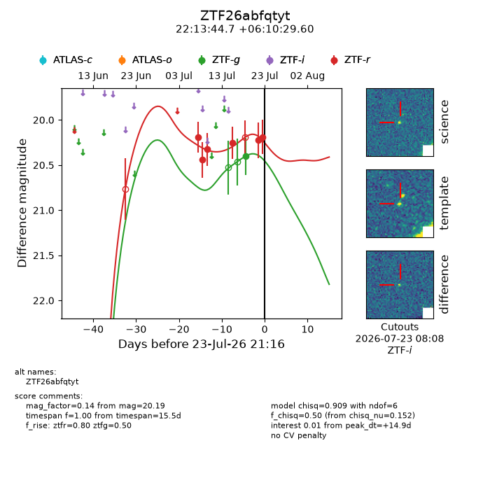
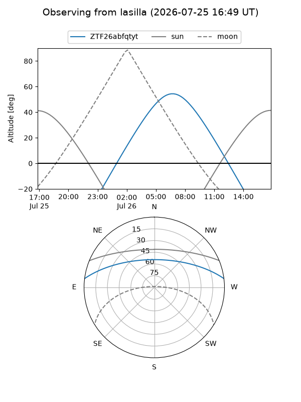
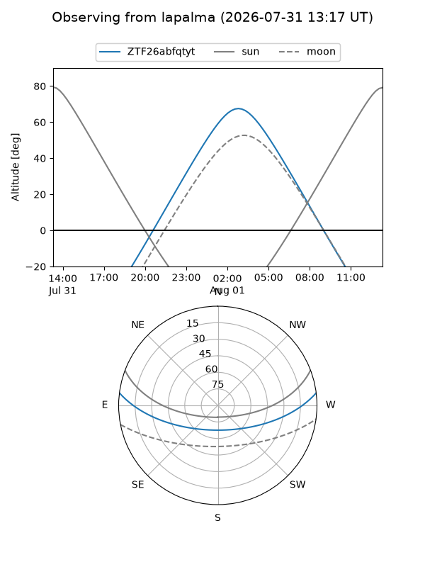
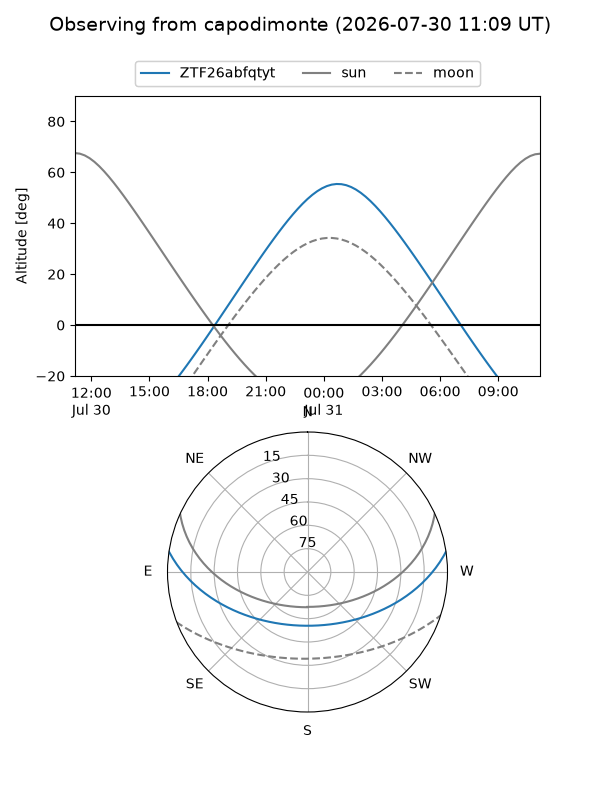
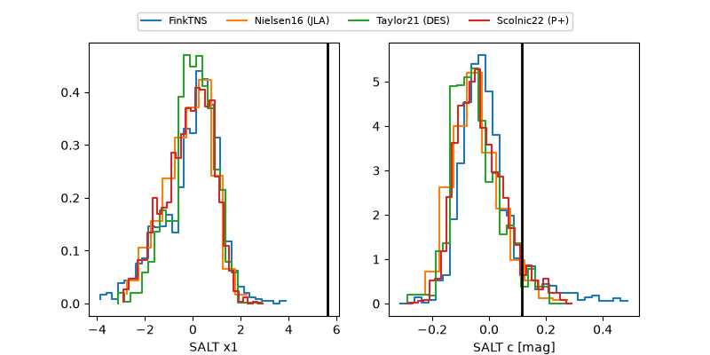

ZTF26abfqtyt
Target ZTF26abfqtyt at 2026-07-23 21:19
Aliases and brokers:
FINK-ZTF: ztf.fink-portal.org/ZTF26abfqtyt
Lasair-ZTF: lasair-ztf.lsst.ac.uk/objects/ZTF26abfqtyt
ALeRCE-ZTF: alerce.online/object/ZTF26abfqtyt
Direct TNS query: direct search
alt names
ZTF26abfqtyt (ztf,fink_ztf)
Coordinates:
equatorial (ra, dec) = 333.4364,+6.17489
equatorial (HMS+DMS) = 22:13:44.75,+06:10:29.60
galactic (l, b) = (68.1653,-39.37999)
Flags:
peak dt: +14.9
Photometry:
last ztfg=20.40, ztfr=20.19
1 ztfg, 6 ztfr detections
Lightcurve

Visibility



Additional plots
